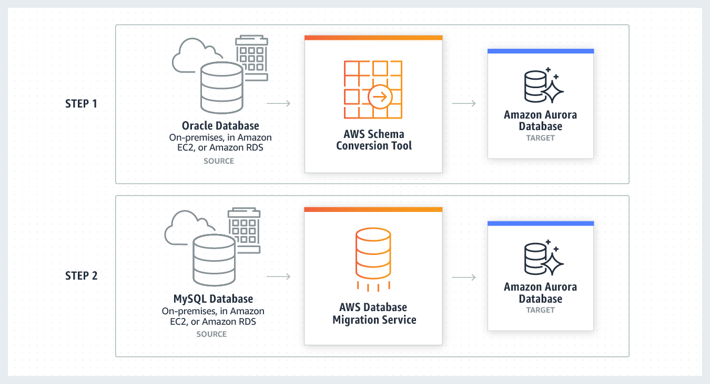

A global leader in communications and technology solutions is undergoing a major transformation in their database management approach. The CTO at the company wants to move away from license-based, expensive, and legacy commercial database solutions deployed at the on-premises data center to more efficient, open-source, and cost-effective options on AWS Cloud. At the same time, the CTO is concerned about identifying areas for data-conversion that require special attention during migration since the on-premises databases have multiple active complex configurations such as secondary indexes, foreign keys, and stored procedures. As a solutions architect, which of the following AWS services would you recommend being used for this solution (Select two)?
communications এবং technology solution-এ একটি global leader তাদের database management পদ্ধতিতে একটি বড় রূপান্তরের মধ্য দিয়ে যাচ্ছে। company-র CTO on-premises data center-এ deploy করা license-based, ব্যয়বহুল এবং legacy commercial database solution থেকে সরে AWS Cloud-এ আরও efficient, open-source এবং cost-effective option-এ যেতে চান। একই সাথে, CTO data-conversion-এর এমন area চিহ্নিত করা নিয়ে চিন্তিত, যেগুলোতে migration-এর সময় বিশেষ মনোযোগ প্রয়োজন, কারণ on-premises database-গুলোতে secondary index, foreign key এবং stored procedure-এর মতো একাধিক active জটিল configuration আছে। একজন solutions architect হিসেবে, এই solution-এর জন্য নিচের কোন AWS service-গুলো ব্যবহার করার recommend করবেন (2টি বেছে নিন) (Select two)?
Choose 2 answers
Correct: B, C. Why it is right
Commercial license DB → open-source engine holo heterogeneous migration (PDF p. 789).
- B. SCT: schema ek engine theke onno engine e convert kore (PDF p. 791); secondary index, foreign key, stored procedure er moto jinish convert kore, ar je jaygay manual attention lagbe ta dekhay.
- C. DMS: tarpor data migrate kore, source DB available thake (PDF p. 789).
Why the other options are wrong
- A. Snowball Edge offline bulk data transfer device; schema convert ba DB migration logic kore na.
- D. Glue ETL service (batch); DB schema, stored procedure convert kore na, migration tool o na.
- E. DMS er basic schema copy shudhu table ar primary key banay; secondary index, foreign key, stored procedure convert kore na, tai SCT lagbe.
Keyword: commercial → open-source + stored procedures, foreign keys → SCT + DMS
Original explanation (English)
Correct options: "AWS Schema Conversion Tool" "AWS Database Migration Service"
AWS Database Migration Service helps you migrate databases to AWS quickly and securely. The source database remains fully operational during the migration, minimizing downtime to applications that rely on the database. AWS Database Migration Service supports homogeneous migrations such as Oracle to Oracle, as well as heterogeneous migrations between different database platforms, such as Oracle or Microsoft SQL Server to Amazon Aurora. Given the use-case where the CTO at the company wants to move away from license-based expensive, legacy commercial database solutions deployed at the on-premises data center to more efficient, open-source, and cost-effective options on AWS Cloud, this is an example of heterogeneous database migrations. For such a scenario, the source and target databases engines are different, like in the case of Oracle to Amazon Aurora, Oracle to PostgreSQL, or Microsoft SQL Server to MySQL migrations. In this case, the schema structure, data types, and database code of source and target databases can be quite different, requiring a schema and code transformation before the data migration starts. That makes heterogeneous migrations a two-step process. First use the AWS Schema Conversion Tool to convert the source schema and code to match that of the target database, and then use the AWS Database Migration Service to migrate data from the source database to the target database. All the required data type conversions will automatically be done by the AWS Database Migration Service during the migration. The source database can be located on your on-premises environment outside of AWS, running on an Amazon EC2 instance, or it can be an Amazon RDS database. The target can be a database in Amazon EC2 or Amazon RDS.
Heterogeneous Database Migrations

via - https://aws.amazon.com/dms/Incorrect options: "AWS Snowball Edge" - Snowball Edge Storage Optimized is the optimal choice if you need to securely and quickly transfer dozens of terabytes to petabytes of data to AWS. It provides up to 80 TB of usable HDD storage, 40 vCPUs, 1 TB of SATA SSD storage, and up to 40 Gb network connectivity to address large scale data transfer and pre-processing use cases. As each Snowball Edge Storage Optimized device can handle 80TB of data, you can order 10 such devices to take care of the data transfer for all applications. The original Snowball devices were transitioned out of service and Snowball Edge Storage Optimized are now the primary devices used for data transfer. You may see the Snowball device on the exam, just remember that the original Snowball device had 80TB of storage space. AWS Snowball Edge is suitable for offline data transfers, for customers who are bandwidth constrained or transferring data from remote, disconnected, or austere environments. Therefore, it cannot be used for database migrations.
"AWS Glue" - AWS Glue is a fully managed extract, transform, and load (ETL) service that makes it easy for customers to prepare and load their data for analytics. AWS Glue job is meant to be used for batch ETL data processing. Therefore, it cannot be used for database migrations.
"Basic Schema Copy" - To quickly migrate a database schema to your target instance you can rely on the Basic Schema Copy feature of AWS Database Migration Service. Basic Schema Copy will automatically create tables and primary keys in the target instance if the target does not already contain tables with the same names. Basic Schema Copy is great for doing a test migration, or when you are migrating databases heterogeneously e.g. Oracle to MySQL or SQL Server to Oracle. Basic Schema Copy will not migrate secondary indexes, foreign keys or stored procedures. When you need to use a more customizable schema migration process (e.g. when you are migrating your production database and need to move your stored procedures and secondary database objects), you must use the AWS Schema Conversion Tool.
References: https://aws.amazon.com/dms/ https://aws.amazon.com/dms/faqs/ https://aws.amazon.com/dms/schema-conversion-tool/
References: https://aws.amazon.com/dms/ · https://aws.amazon.com/dms/faqs/ · https://aws.amazon.com/dms/schema-conversion-tool/
Related: Section 16 AWS Storage Extras · Section 22 Data & Analytics